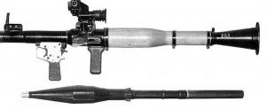

Trận Chiến Kết Thúc Nhưng Cuộc Chiến Thực Sự Mới Bắt Đầu

ừng chiến đấu ở miền Nam hơn một năm, Trung úy Nguyễn Văn Khánh là một chiến binh dày dạn trận mạc. Ông chỉ huy một trung đội bộ binh thuộc Sư đoàn 312 vào năm 1967, chuẩn bị cho một cuộc nghênh đón bất ngờ đối với Thủy quân lục chiến Mỹ sắp đáp xuống một ngọn đồi ở Khe Sanh.
Khe Sanh, tương tự Đường mòn Hồ Chí Minh, đã trở thành một nơi thử thách ý chí giữa người Mỹ và Bắc Việt. Một căn cứ chiến đấu mới được Mỹ lập nên ở Khe Sanh để chủ yếu phục vụ cho các chiến dịch ngăn chặn Đường mòn Hồ Chí Minh cũng như làm mồi nhử Tư lệnh quân Bắc Việt – Đại tướng Giáp – đưa quân tấn công vào căn cứ có vẻ như đơn lập này. (Khi gặp tướng Giáp vào tháng 9 năm 1994, tôi hỏi ông rằng có phải chiến lược ở Khe Sanh là một chủ ý nhằm lặp lại chiến dịch Điện Biên Phủ, nơi ông đã vây hãm quân Pháp, buộc họ phải đầu hàng. Ông nói rằng ông biết khả năng tăng cường không quân của Mỹ tại đây khiến việc lặp lại một trận Điện Biên Phủ là không thể - vì thế ở Khe Sanh, ông chỉ tìm cách gây tổn thất sinh lực lớn cho quân Mỹ để làm giảm ý chí chiến đấu của họ).
Sự xuất hiện của một đơn vị cỡ Sư đoàn 312 khiến người Mỹ tin rằng mồi nhử của họ đã phát huy tác dụng.
Khánh đến Khe Sanh vào tháng 3 năm 1967 nhằm đáp trả lại hành động lập căn cứ của quân Mỹ. Chính ngay tại đây, thời kỳ quân ngũ của ông đã bị rút ngắn – Khe Sanh trở thành trận đánh cuối cùng của ông chống lại người Mỹ.
Vào một buổi sáng, trinh sát Sư đoàn 312 phát hiện một máy bay do thám của Mỹ, chiếc OV-10 Bronco, đang bay lượn trên đầu. Họ quyết định không bắn máy bay, thay vào đó tiếp tục ẩn nấp vì họ thấy rằng có thể dụ quân Mỹ vào trận phục kích.
Tư lệnh Sư đoàn 312 hiểu rất rõ chiến thuật của người Mỹ; ông biết rằng sự xuất hiện của chiếc OV-10 có nghĩa là quân Mỹ đang tìm kiếm các địa điểm tốt để đổ quân. Khi chiếc OV-10 lượn qua hai ngọn đồi ngay giữa nơi đóng quân của Sư đoàn 312, Sư đoàn trưởng không muốn phía Mỹ biết rằng quân của ông đang ở đó cho đến khi một cuộc phục kích được thực hiện. Kế hoạch của ông là chờ tới khi người Mỹ đổ quân xuống mới phát động một cuộc tấn công tầm cỡ sư đoàn. Mục đích của Sư đoàn 312 không phải là chiếm các địa điểm của kẻ thù mà là gây ra thương vong lớn cho lực lượng Mỹ vốn đang vượt trội về quân số.
Như dự đoán, Thủy quân lục chiến sau đó được chuyển tới hai ngọn đồi bằng trực thăng. Từ đỉnh ngọn đồi thứ ba cách đấy 400 mét, Khánh và trung đội của ông ẩn mình chờ đợi. Hai phần ba trung đội 22 người của ông là tân binh, chỉ mới 17-18 tuổi; nhưng Khánh biết rằng ông có thể đặt niềm tin vào họ.

Sáng hôm đó có nhiều đợt Thủy quân lục chiến đến. Tuy nhiên, Khánh ngạc nhiên nhận thấy rằng đối phương không đào hầm hố hoặc thiết lập các công sự chiến đấu. Khi chiếc trực thăng cuối cùng rời đi, Tư lệnh Sư đoàn 312 phát lệnh tấn công.Chỉ sau vài phút, Thủy quân lục chiến trên các ngọn đồi kia đã rơi vào địa ngục. Được trang bị AK-47 cùng với B40 và B41 – đồng thời được pháo binh yểm trợ - Sư đoàn 312 đã khiến Thủy quân lục chiến bất ngờ. Vừa trườn tìm chỗ nấp, Thủy quân lục chiến vừa triển khai một nỗ lực phòng thủy nhanh chóng mà sau đó trở thành một trận đánh kéo dài sáu tiếng.
Lúc Khánh chỉ huy đơn vị tấn công, Thủy quân lục chiến đã gọi pháo binh và không quân bắn yểm trợ. Hỏa lực quá mạnh của đối phương buộc trung đội của Khánh phải tháy đổi vị trí nhiều lần trong suốt cuộc chiến.
Bốn giờ sau khi trận chiến bắt đầu, Khánh nằm trên mặt đất, tiếp tục chỉ huy đơn vị đánh mạnh vào Thủy quân lục chiến. Một quả đạn pháo rơi cách vị trí ông năm mét. Mảnh pháo xuyên qua cẳng chân bên trái khiến máu chảy không ngừng. Nhiều binh sĩ chạy đến trợ giúp Khánh, nhưng ông bảo họ hãy tới giúp đỡ hai người lính đang bị thương nặng cũng do quả đạn pháo này. Biết rằng mình sẽ sớm bất tỉnh, ông xé tay áo buộc chặt quanh chân để cầm máu. Rồi quên đi vết thương nặng ấy, ông tiếp tục chiến đấu.
Đến khi ngưng trận, Khánh kiệt sức. Ông đuối dần, và lần đầu tiên, cảm thấy đau đớn vô cùng ở chỗ vết thương. Dây băng chỉ làm chậm chứ không ngăn chảy máu được. Từ nơi lỗ thủng ở chân, ông thấy ống xương bị gãy nghiêm trọng.
Trận đánh kết thúc, Sư đoàn 312 bắt đầu một nhiệm vụ khó khăn là chuyển thương binh tới các điểm sơ cứu. Hai người lính thay nhau cõng Khánh trên lưng. Đường đến nơi sơ cứu chỉ chừng hai cây số nhưng cây bụi và đồi dốc đã khiến nhiệm vụ này vô cùng cam go. Chuyến đi mất khoảng ba tiếng đồng hồ.
Một bác sĩ và ba y tá đón thương binh ở điểm tiếp nhận. Khám vết thương của Khánh, vị bác sĩ biết rằng ở đây ông không thể làm gì hơn cho bệnh nhân. Vết thương ở chân cần được mổ gấp – một ca phẫu thuật mà điểm tiếp nhận này thiếu phương tiện tối thiểu để thực hiện. Khánh cần được chuyển tới bệnh viện chiến trường chính. Không xe chuyên chở, bệnh nhân có thể đối mặt với một chuyến đi thập tử nhất sinh kéo dài nửa tháng trên băng ca. Vị bác sĩ biết rõ những nguy cơ trong một chuyến đi như thế đối với Khánh – nhưng không có sự lựa chọn nào khác. Phẫu thuật là hy vọng duy nhất. Sau khi băng bó vết thương và tiêm moóc-phin, bác sĩ lập tức cho chuyển Khánh đi.
Một hình ảnh đối nghịch gai góc, giữa lúc Khánh được chuyển đi bằng băng ca thì Thủy quân lục chiến bị thương trong cùng trận đánh ấy đã được chăm sóc y tế đầy đủ, sau khi được sơ tán khỏi chiến trường hàng giờ trước đó.
Suốt hành trình bằng cáng ấy, Khánh lúc tỉnh lúc mê. Trong những khoảnh khắc tỉnh táo ngắn ngủi, Khánh được cho ăn. Nhưng ông hầu như chẳng ăn gì mà chỉ uống nước. Ông bị giảm cân nghiêm trọng – từ 58 xuống còn 36 cân. Đáng ngại nhất là sự mất sắc của cái chân bị thương – cho thấy quá trình hoại tử bắt đầu. Khánh biết rằng nếu không được chăm sóc y tế kịp lúc, nhiễm trùng có thể lan ra toàn cơ thể. Tốt nhất thì bị mất chân; mà xấu nhất thì mất mạng. Ông đang chạy đua với thời gian.
Khi nhóm tới bệnh viện chiến trường, Khánh tái đi nhanh chóng. Bác sĩ điều trị đưa ông tới ngay phòng mổ để cưa chiếc chân đang dần thối rữa. Tỉnh dậy sau ca phẫu thuật, Khánh liếc nhìn xuống chỗ trũng trên chăn do chiếc chân vừa bị cưa tạo nên. Hình ảnh chiếc chân cụt mà ông bắt gặp không khiến ông hoang mang.
“Tôi cảm thấy may mắn khi mình vẫn còn sống”, ông nói. “Ngay từ buổi đầu nhập ngũ, tôi đã biết rằng nguy cơ chết chóc là rất cao. Giờ đây, tôi là một người may mắn – tôi sống sót. Rốt cuộc thì tôi chỉ mất một cái chân, tôi vẫn còn một cái nữa”.
Bảy ngày sau ca phẫu thuật, Khánh được chuyển ra Bắc. Lần này ông lại di chuyển dọc Đường mòn Hồ Chí Minh, nơi ông từng đi bộ nhiều năm về trước. “Ít ra thì lần này tôi cũng không phải đi bộ mà được ngồi xe tải”, ông nói.
Nằm trên võng sau thùng xe tải, Khánh hướng ra miền Bắc. Xe chỉ đi vào ban đêm và thực hiện hành trình khá suôn sẻ, thường mỗi đêm đi được một trăm cây số.
“Hoàn cảnh của tôi thế mà có chút lợi đấy”, Khánh trầm ngâm. “Vì xe tải này trở thương binh nên nó luôn được ưu tiên lưu thông trên đường ra Bắc. Tôi cứ nghĩ bụng, ‘Mình mới may mắn làm sao’ ”. Chuyến đi kéo dài khoảng ba tuần.
Nhưng cuộc di chuyển này cũng không tránh khỏi các rắc rối thường thấy đối với những người đi dọc Đường mòn – đoàn xe bị máy bay Mỹ tấn công ba lần. Mỗi lần như vậy, hiệu lệnh báo động được phát đi từ các trạm quan sát để thông báo máy bay Mỹ sắp tới. Thời điểm phát báo động đủ sớm để mọi người có thể xuống xe, chuyển thương binh vào điểm trú ẩn và giấu xe.
Chuyến đi của Khánh kết thúc tại một bệnh viện ở Thanh Hóa, cách Hà Nội 150 cây số về phía Nam. Ông dưỡng bệnh ở đấy một tháng rưỡi. Trong vòng năm năm sau đó, ông dùng nạng để đi lại cho đến khi nhận được một cái chân giả. Năm 1989, ông nhận một chiếc chân nhân tạo mới, rất linh hoạt được sản xuất bởi đất nước từng cướp đi chiếc chân thật của ông.
Ngày nay, Khánh luôn coi mình là một người may mắn. Ông, khác với nhiều đồng đội của mình, đã qua mặt cái chết ở Khe Sanh để tiếp tục sống và kể lại câu chuyện này.